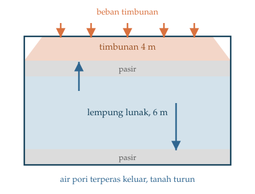
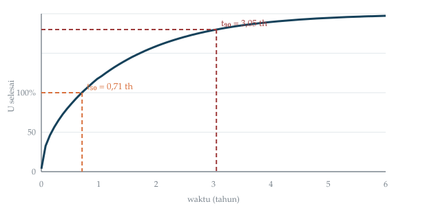
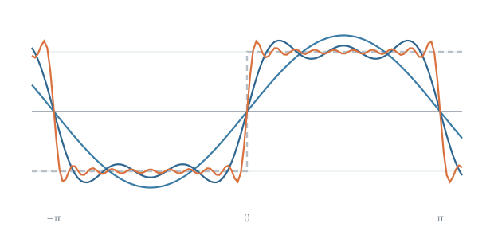

Kuliah Pengantar • Matematika Advance
Satu Semester ke Depan
Mohammad Jamhuri · Universitas Islam Negeri Maulana Malik Ibrahim Malang
Anda insinyur di proyek jalan tol. Timbunan setinggi $4$ m sudah selesai dihampar di atas lapisan lempung lunak setebal $6$ m.
Kontraktor menelepon:
Jawab terlalu cepat: perkerasan retak karena tanah masih turun.
Jawab terlalu lama: proyek molor, denda berjalan.


Yang sebenarnya kita lacak bukan “penurunan”, melainkan kelebihan tekanan air pori $u$, yang berbeda di setiap kedalaman dan berubah setiap saat:
$$u = u(z, t)$$
2
Persamaan yang baru saja Anda lihat:
$$\dfrac{\partial u}{\partial t} = c_v\,\dfrac{\partial^2 u}{\partial z^2}$$bukan hanya milik geoteknik.
Persamaan yang sama persis, huruf demi huruf, juga mengatur empat persoalan berikut.
Semen yang berhidrasi memanaskan beton dari dalam. Inti pilecap jauh lebih panas daripada permukaannya.
$$\dfrac{\partial u}{\partial t} = k\,\dfrac{\partial^2 u}{\partial x^2} + Q$$
Selisih suhu inti–permukaan pada keadaan tunak:
$$\Delta T = \dfrac{Q_0 L^2}{8k}$$
Hentikan waktunya, ambil keadaan tunak, $\partial u/\partial t = 0$:
$$\dfrac{\partial^2 h}{\partial x^2} + \dfrac{\partial^2 h}{\partial z^2} = 0$$
Tinggi tekan air tanah $h$ memenuhi persamaan Laplace. Solusinya adalah jaring aliran yang Anda gambar di kelas geoteknik.
Kembalikan waktunya, tapi jadikan turunan waktu orde dua:
$$\dfrac{\partial^2 u}{\partial t^2} = c^2\,\dfrac{\partial^2 u}{\partial x^2}, \qquad c = \sqrt{E/\rho}$$
Beton: $c \approx 3500$ m/s. Tiang $18$ m $\Rightarrow$ gelombang pulang-pergi dalam 10 milidetik.
Kekekalan jumlah kendaraan memberi PDP orde satu:
$$\dfrac{\partial \rho}{\partial t} + q'(\rho)\,\dfrac{\partial \rho}{\partial x} = 0, \qquad q(\rho) = v_f\rho\left(1 - \tfrac{\rho}{\rho_j}\right)$$
3
Gagasan yang akan kita pakai berulang kali sepanjang semester:

4
| Minggu | Topik |
|---|---|
| 1–2 | Klasifikasi & karakteristik |
| 3–5 | Deret Fourier & separasi variabel — simpul utama |
| 6–7 | Persamaan panas |
| 9–10 | Persamaan gelombang |
| 11–12 | Persamaan Laplace |
| 13 | Sturm–Liouville |
| 14 | Domain dua dimensi |
| 15 | Komputasi & beda hingga |
“Pak, kapan saya boleh mulai mengecor perkerasannya?”
Selamat datang di Matematika Advance.
Sisa pertemuan hari ini bukan tentang menghafal rumus, kita bangun kosakatanya dulu.
Jawabannya menyingkap beda mendasar persamaan panas dan gelombang. Kita bongkar di Bab 5.
Dr. Mohammad Jamhuri · UIN Maulana Malik Ibrahim Malang